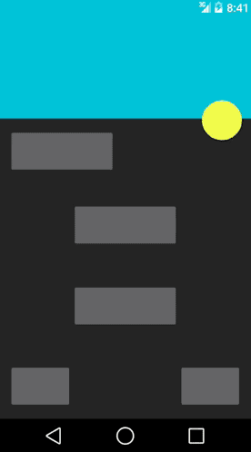
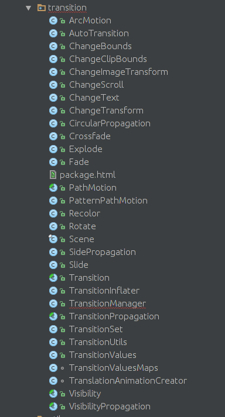
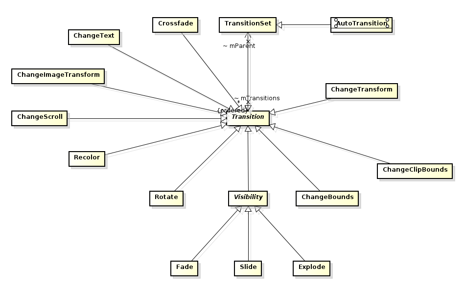
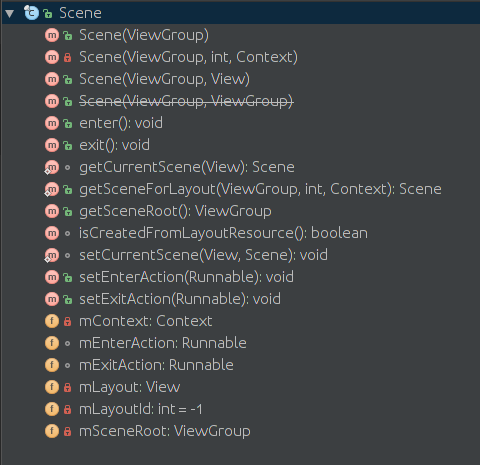
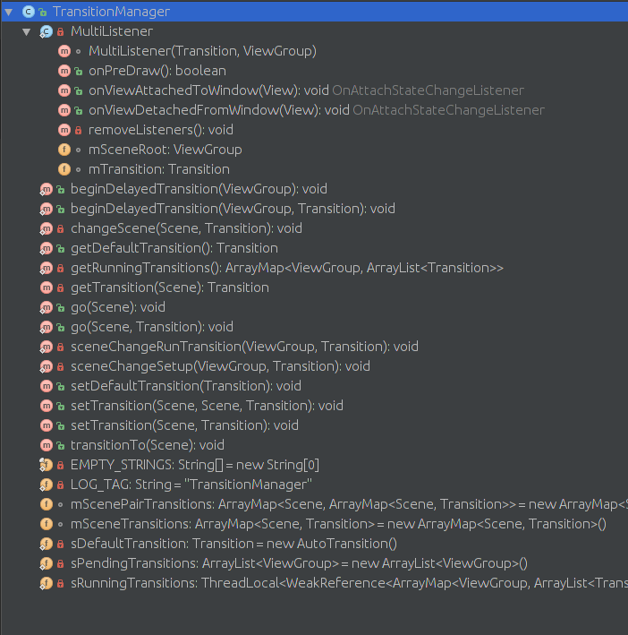
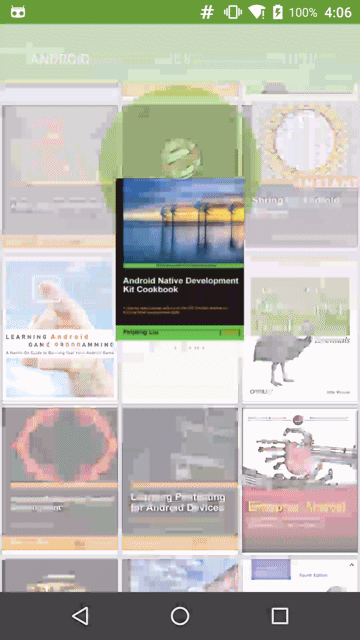
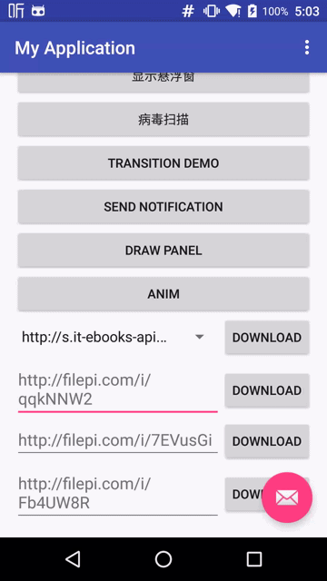

上篇博文中完全总结了安卓的动画框架，以及它的使用和应用场景。随着安卓源码的不断迭代，尤其到安卓5.0以后引入了Material设计模式。使得Android动画效果更加完善，在5.0之前号称为过度版的KitKat中引入了Transition框架，从字面上看它是过渡、转场的意思。上篇博文中也介绍了View动画的应用场景，不同的是本篇将介绍安卓Transition转场框架的应用。
Transition框架
Transition框架主要的作用对象是控件、视图层级（布局）、Activity和Fragment之间。如下图所示的Activity之间的切换以及各自的视图层的动画效果。

Transition框架在动画运行时改变一些对象属性值来达到预期效果，框架内置了一些普通的过渡动画(Fade Explode Slide Rotate等)并且允许开发者自定义复杂的过渡动画。下面就来深入了解转场动画吧。> 注意:
Transition是API19引入的，使用时要注意版本兼容性问题。在4.0(API14)到4.4(API19)之间的版本可以使用animateLayoutChanges属性应用布局动画，具体可以查看官方指南。为了帮助实现视图层级之间的过渡动画，AndroidAPI19引入
transition框架。源码位于/frameworks/base/core/java/android/transition/..下，其结构如下图所示

Transition是过渡动画的基类，框架中提供了很多实用的过渡动画，如下图所示

Transition框架会为视图层级中的多个view应用一个或者多个动画，从而达到视图间转场过渡的效果。Transition具有如下特点：- 组级别的动画 应用在多个View上并且使用一个或者多个动画效果。
- 依赖于转场 在View属性值的开始与结束之间进行动画
- 内置动画 框架内部依赖于动画框架，例如淡出或者移动的效果
- 支持XML资源文件编写
transitionSet transitionManager等- 监听器 和动画框架一样支持动画生命周期的回调
### Transition框架工作原理
前文对
Transition的类作了大致的了解，并且介绍的框架的一些特点。下面谈谈框架的工作原理。其实框架围绕着两个概念进行架构一个是
Transition另一个是Scene，它们分别代表转场和场景的意思。Scene维护着视图的状态并且持有mEnterAction和mExitAction执行视图出现和消失的Runnable。如下图所示的Scene内部结构

Transition则定义了在两个Scene之间的动画切换。Transition内部结构比较复杂，主要封装了一个AnimationInfo内部静态类用于转场动画和TransitionListener监听器。当一个场景消失并出现另外一个场景的时候，
Transition主要做以下两件事：1. 捕获
Scene在开始和结束时的状态2. 基于从一个场景到另外一个场景的视图动画创建Animator
### TransitionManager
对
Transition的结构有了大概了解后，我们看一下框架中重要的TransitionManager，下图是它的内部结构

可以看到方法beginDelayedTransition作用与
ViewGroup上，以及方法go作用在Scene。下面通过实例具体看看这两个方法的应用效果。
|
|
这里使用框架内置的
Fade(淡入淡出) Slide(滑动) Explode(爆炸)转场效果。
对于
Transition也可以通过XML文件来声明例如Explode，可以创建res/transition/explode.xml文件
|
|
并且使用
TransitionInflate#inflateTransition方法创建Transition对象。注意：在调用
beginDelayedTransition方法之后一定要改变布局中元素的可见性(最好使用INVISIBLE而不是GONE)，否则不能达到预期的效果。下面看一下
go方法的使用。
|
|
上述代码的效果等同于
animExplode。Scene的创建如下：
|
|
第二个构造器的第二个参数是该场景的视图层级，当进入该场景后，它将被作为子元素添加到
sceneRoot。除了在构造器中添加布局和控件之外，Scene还提供了setEnterAction和setExitAction以及enter和exit方法用于进场和出场。### 深入理解转场过程
beginDelayedTransition方法中会做几件事，第一，如果没有传入transition参数将会使用默认的转场类Fade淡入淡出效果。第二，调用sceneChangeSetup方法设置现在场景的变化。第三，setCurrentScene设置当前场景并且通过sceneChangeRunTransition方法为sceneRoot添加监听器。下面看一下
sceneChangeSetup方法具体干了些什么？
|
|
逻辑很清晰，首先捕获正在运行的转场动画如果有的话就暂停它，接着调用
captureValues方法，从字面意思上看是捕获一些值。最后是获取前一个场景如果不为空就调用其退出的方法。很显然这里的重点是captureValues方法，接着往下看
|
|
可以看到无论是为转场框架设置了target与否都会调用
captureStartValues(values)和captureEndValues(values)来捕获进场和出场的values，在捕获过程中使用循环递归寻求每一个子元素的状态。captureStartValues和captureEndValues都是抽象方法。下面看一下explode的具体实现
|
|
主要记录了子元素的
left top right 和bottom属性。通过
ViewTreeObserver中回调onPreDraw方法捕获结束时的values
|
|
可以看到在
mTransition.captureValues(mSceneRoot, false)最后调用playTransition方法进行转场动画。在该方法中会根据布局以及它的在之前捕获的开始与结束的状态来创建动画。
|
|
最后通过
runAnimators方法执行动画。具体代码这里就不跟进了，感兴趣的同学可以自行查阅。以上就是转场工作的过程。从上面的例子以及源代码分析可以得出两个重要的线索，一，Transitions将Animators的观点提取出来，这样Transitions就可以使减少开发人员在Activity和Fragment中写大量的代码：所有的开发者必须做的是设置视图开始和结束的values，这样Transition将根据他们之间的差异自动构建一个动画。二，可以使用Transition内置很简单且方便的改变场景之间的动画(Fade,Slide,Explode)。正如我们前面所看到的这些Transition的优点使我们构建更加复杂Activity和Fragment转场动画时使用几行代码就能搞定，在下一节我们将看到这些特性是如何应用在Activity&Fragment之间的转场。
## Activity和Fragment转场
对于Activity或者Fragment之间的转场，我们在上篇博文中也简单介绍了,它使用
Activity#overridePendingTransition()和FragmentTransaction#setCustomAnimation()来作为Activity和Fragment切换动画。这两个方法只能将Activity/Fragment作为一个整体进行动画切换。而引入Transition框架后更加丰富了动画效果以及API的灵活调用。它使得Activity/Fragment中的视图在它进出其容器的时候也能有动画效果甚至可以将共享视图在不同的Activity/Fragment之间进行动画切换。在介绍Activities和Fragments之间的转场前先介绍下转场要用到的术语，注意下面的列出来的ActivityTransition的术语也同样适用于FragmentTransition：- 由A启动B，A称为主叫Activity，B称为被叫Activity
- Activity Transition APIs围绕着
exit，enter，return和reenter四种切换方式构建Transition，下面是ActivityA和B的四种切换描述:+ 由A启动B，A退出转场决定了A的视图的动画效果
+ 由A启动B，进入B的场景决定了B视图的动画效果
+ 由B返回到A，B的返回转场决定了B视图的动画效果
+ 由B返回到A，重新进入到A的转场决定了A视图的动画效果
- 最后，框架为两种Activity转场方式提供了APIs，这两种转场分别是content transitions 和 shared element transitions每一种方式都允许我们在Activity之间自定义转场动画，并且是一种唯一的方法，如下：
+ 内容转场决定了在一个Activity中不共享的被叫视图转场到要进入的或者要退出的下一个Activity的场景
+ 共享元素转场决定了一个Activity中共享元素<也称为英雄View>在两个Activity中动画效果
如图，很好的展示了内容转场和共享元素转场，Google Play Newsstand应用，尽管我们看不到Newstand的源代码，但我猜想它一定使用了如下的转场：
- 在exit和reenter过程中A（主叫Activity）的内容转场为null，这是因为A中没有不共享的视图，在exit和reenter过程中没有动画效果。
- 在enter过程中B（被叫Activity）使用了一个自定义的slide-in转场，该转场使用了一个随机的列表item slide到窗口的底部
- 在return工程中B使用了TransitionSet，用了两个子Transition并行的过程效果。一个Slide(Gravity.TOP)转场产生视图上半部分的动画效果。另一个是Slide(Gravity.BOTTOM) 转场产生视图下半部分的动画效果。最终的结果是当用户点击返回键返回ActivityA的时候出现”break in half”的效果。
- 在enter和reenter过程中共享元素转场都使用了ChangeImageTransform，这是因为在两个Activity转场过程中产生了ImageView的动画效果。
你也许注意到了在转场过程中的半圆形的动画效果，这个效果将在之后的章节进行应用。而现在我们将问题放简单并且快速熟悉APIs所提供的方法。
使用Transition框架API应用Activity转场动画
使用Lollipop APIs所提供的接口来创建一个Activity转场是相对简单的，概括起来需要在你的应用中进行以下几个步骤。接下来的几篇文章也将使用用例和实例来进行切入，但现在我们还有两节内容来好好介绍一番
- 为了使用新的转场API我们需要请求Window.FEATURE_ACTIVITY_TRANSITIONS的窗口特征，调用时机放在called和calling activities的时候当然也可以定义在主题xml文件中Material的主题默认该flag是enable的（备注2）
- 为主叫Activity和被叫Activity分别设置exit和enter内容转场。使用了Material主题的应用分别默认其内容转场为null和Fade。如果reenter或者return没有明确设置，那么Activity的exit和enter内容转场分别用于reenter和return的动画效果。
- 为主叫Activity和被叫Activity分别设置exit和enter的共享元素的转场。使用了Material主题的应用有自己共享元素的exit和enter转场，它们默认被设置为@android:transition/move。如果reenter和return没有明确被设置的话，那么Activity的exit和enter内容转场分别用于reenter和return的动画效果。
- 为使用内容转场或共享元素转场来启动一个Activity可以使用startActivity(Context, Bundle)方法，并且将如下创建的Bundle作为参数传递进去：
|
|
pair是一个Pair<View, String>对象的数组，Pair<View, String>将共享视图和其名字绑定，千万注意要给共享元素起一个唯一的名字，可以在代码中定义setTransitionName)也可以在xml中定义attr_android:transitionName，否则的话转场将不会正常工作的。
在代码中触发一个return转场可以使用finishAfterTransition()方法来代替finish()方法
默认情况下，Material主题的应用有他自己的exit/enter内容转场在exit/reenter转场完成之前首先启动一点点，并且创建一个很小的重叠（overlap）来使得转场更加无缝和动态。如果你想明确的禁止这种行为可以使用setWindowAllowEnterTransitionOverlap()和 setWindowAllowReturnTransitionOverlap()方法或者也可以在主题XML中禁用掉。
使用Transition框架API应用Fragment转场动画
如果你使用Fragment转场的话，和Activity转场相比会有些许不同
- 在 exit, enter, reenter, 和 return的内容转场中，应该在
Fragment中或者在相应的Fragment XML tag上的attributes使用相同的方法 - 在enter和reenter的共享元素转场中，也应该在
Fragment中或者在相应的Fragment XML tag上的attributes使用相同的方法 - 然而在
Activity转场中可以使用startActivity()和finishAfterTransition()显示的触发转场动画。对于Fragment转场，通过FragmentTransition进行added,removed,attached,detached,shown, 或者hidden的事务操作时候会自动触发转场动画。 - 对于共享元素转场，共享元素应该被作为FragmentTransition一部分被指定好。当在FragmentTransition被提交之前调用
addSharedElement(View, String)方法时就应该指定好共享元素的视图。这样才能保证共享元素转场动画工作正常。
实践

为了实现上述效果，可以分为如下几步
1.共享元素转场，这里将图书图片作为共享元素
|
|
2.作为转场共享元素一定要在被叫Activity的enter过程中设置好共享元素，被叫进场时上半部分有一个波纹Reveal的效果，这里先不介绍留作最后一部分Fab酷炫转场
3.被叫退出时，从中间有一个断裂的动画效果可以使用普通的View动画实现
Transition框架在这里主要应用在图片作为共享元素在两个Activity之间的连接效果。
除此之外还可以通过XML文件实现共享元素转场的效果。
1.首先保证Window Content Transition， 在value/style.xml
当然也可以为整个App指定默认的enter exit 以及共享元素
2.使用android:transitionName属性定义普通的的共享元素
|
|
3.最后通过Java代码启动Activity b
以上就是应用在Activity或者Fragment之间的转场效果，但是在实际开发中我们除了转场动画还会对其他控件进行稍微的动画调整例如在前文例子中经常看到的波纹Reveal效果，或者Fab按钮的出场效果。在下一节中介绍一种常用的FAB按钮应用在转场中的效果，这时候我们要使用Transition和Animation两大框架共同完成复杂的动画效果。所以说Transition不是万全的很多时候都要配合动画来完成转场。
Fab酷炫转场

从上图效果看可以将转场分为两个部分一个是fab作为共享元素在两个Activity之间的转场，另外就是在第二个Activity中fab通过波纹效果扩充至整个屏幕的动画。同理Activity退出时也是两部分动画的逆序效果。
1.使用ActivityOptionsCompat和Transition以及共享View实现Activity的转场动画实现。定义两个Activity的共享元素并为其setTransitionName相同的名字
|
|
显示启动Activity
2.在被启动的Activity启动时完成Transition动画，这里是一个弧形的轨迹，可以通过res/transition/change_bound_with_arg.xml文件来完成，具体如下：
通过代码创建Transition对象
在被叫Activity启动时调用
3.在给弧形移动效果后，执行波纹效果animationRevealShow(mRoot)
View框架提供了ViewAnimationUtils类来创建一个RevealAnimator波纹动画。在波纹动画过程中主要是对布局背景颜色的填充，故这里回调动画节点进行背景颜色的填充。而这里的view是Activity的root View用于扩充其背景色的，在动画结束后可以做一些“真正的Activity创建的初始化工作”
|
|
这里使用了一个fade in的效果来呈现最终被启动Activity后的view
4.退出当前的Activity正好是一个逆向的过程：
|
|
注意：执行reveal动画的时机必须在activity被attached之后在能完成否则程序会crash，通常的解决办法是监听OnLayoutChangeListener接口
参考
https://developer.android.com/training/transitions/index.html
https://github.com/saulmm/Android-Material-Examples
http://www.androiddesignpatterns.com/2014/12/activity-fragment-transitions-in-android-lollipop-part1.html